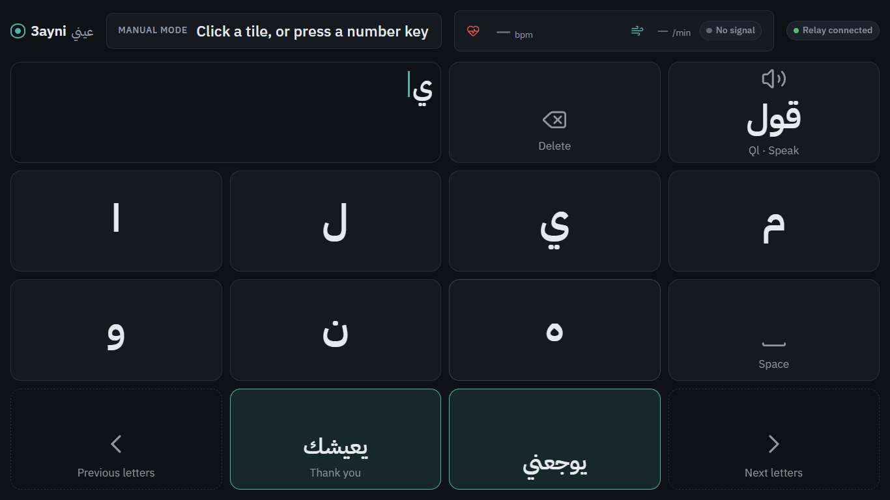
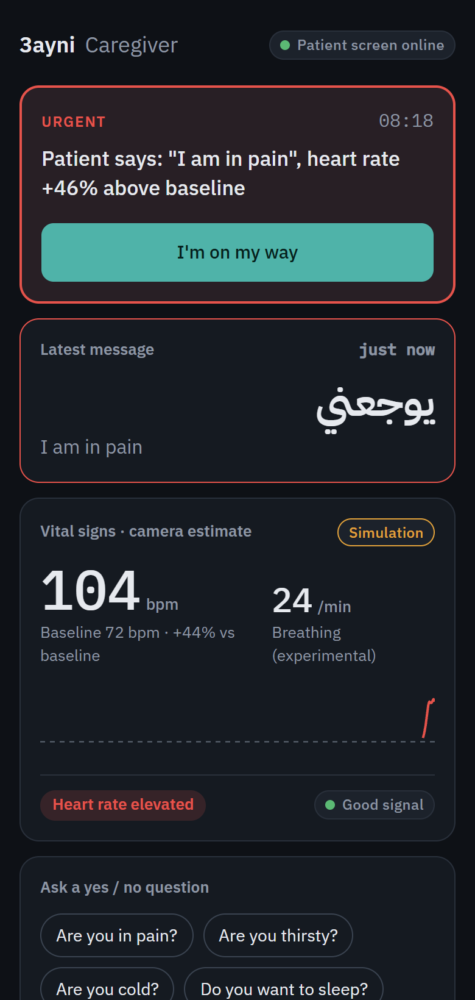

3ayni عيني
A voice and a pulse monitor for patients who cannot speak or move.
Tech4Health 2.0 Hackathon, team Eddes Eddes A777
Mohamed Idriss Mokdadi and Ahmed Ammar
Am Hédi hears everything.
He understands everything.
He cannot say a single word.
One blink. Today, that is all he has.
Awake, aware, and unheard
- After a stroke, with ALS or on a breathing tube, patients stay awake but cannot speak or move.
- Their families guess from blinks.
- Eye-gaze devices cost thousands of dinars.
- Their distress goes unheard.
Today: blink codes
One blink for yes, two for no. Karim has to guess the question.
He wanted to say
“I am in pain.”
Nobody asked.
Today: letter boards
Karim reads each row aloud. Am Hédi blinks at the right row, then at the right letter.
Spelled:
0:00 of his time, played 6 times faster
Today: a call button and a monitor
- The button is in his hand. His hand cannot press it.
- The monitor sees his heart racing. It cannot tell anyone why.
HR
104
Try to press it.
No solution does all three
| Today | He can say what he wants | His distress is noticed | The nurse is told | Cost |
|---|---|---|---|---|
| Blink codes | Yes or no only | No | No | Free |
| Letter boards | Slowly, with help | No | No | Free |
| Eye-gaze tablets | Yes | No | No | Thousands of € |
| Phone eye control | Yes, on a phone | No | No | A recent phone |
| Monitor and call button | No | His body only | If he can press | Hospital only |
| 3ayni | Yes, in Darija | Body and words | Yes, on his phone | A laptop |
Your mouse is his gaze. Hold it on a tile.
One laptop gives him a voice and a pulse

He looks. The laptop speaks his phrase in Darija.
The same camera reads his heart rate from his face.
Pain with a racing heart reaches Karim's phone.
Made for a whole day and night at his bed

- Karim chooses his six phrases from his phone.
- A keyboard for the rest: most used letters first, suggestions from his letters and his heart.
- A question is just yes or no, big in the middle of the screen.
- Closed eyes choose nothing.
- At rest, the screen sleeps to one dot. It stays awake longer when his heart races.
From a glance to the nurse's phone
- CameraFilms his face, on the laptop only.
- Face modelTracks his eyes and 478 points.
- Six tilesHis gaze selects one.
- PulseSkin colour reveals each heartbeat.
- RulesCombine his words and his heart.
- PhoneKarim gets the message and the alert.
Live, with one of you

72 bpm within his usual range
Urgent
“I am in pain.” Heart rate 47 % above his baseline.
AI where rules can't. Rules where trust matters.
| Part | How | Why |
|---|---|---|
| Eye and face tracking | Neural network (MediaPipe) | Impossible with rules |
| Gaze to screen | Personal calibration in 15 seconds | Every face is different |
| Pulse from video | Published signal method (POS) | Explainable, no training data |
| Phrase suggestions | Small model on the laptop | Offline, learns the patient |
| Alerts | Plain rules with thresholds | Predictable for nurses |
What we measured
of messages in the model's top 3 suggestions, against 38 % for a fixed list
heart rate on test signals from 52 to 130 bpm
automated tests passing
Simulated conversations and synthetic signals. The next measure is a hospital pilot.
Private by design, honest by default
- The video stays on the laptop. It is never stored or sent.
- Phones pair with a code shown at the bedside.
- A weak signal shows a dash, never a guess.
- Skin tone and light are tested against a reference device.
One software, from one bed to every bed
Hardware
Today: any laptop webcam, at no cost.
Next: a low-cost infrared camera that sees his eyes at night, in a dark room, through glasses and on every skin tone.
Then: tablets and cheap Android phones on a bedside mount.
Deployment
Pilot: one ward in a Tunisian hospital, intensive care, neurology or stroke rehabilitation.
Then: public hospitals and rehabilitation centres.
Home: the family's phone becomes the caregiver app.
Product
His own voice: Darija voice banking, with consent.
When the eyes tire: head movement or a single switch.
In the ward: alerts in the nurse call system, and a pain log for doctors.
Video stays on the device at every step. Infrared frames are never stored.
A voice for every patient who cannot speak,
from a camera already in the room.
His eyes speak. His heart is heard.
Questions and discussion are welcome.
Team Eddes Eddes A777: Mohamed Idriss Mokdadi and Ahmed Ammar
Your questions: accuracy and safety
How accurate is the camera heart rate?
Within 3 bpm on test signals from 52 to 130 bpm. On real faces it works in good front light and when still; a weak signal shows a dash, never a number. A pilot against a pulse oximeter comes next.
What if it is wrong?
Alerts need a sustained rise above his own baseline, with hysteresis, and every alert states its reason. It adds to clinical monitors; it never replaces them.
Can he choose something by accident?
A choice needs a steady look of 1.4 seconds. Closed eyes cancel everything, and the screen sleeps to one dot when he rests.
Is it a medical device?
No. It is an assistive tool. Clinical validation would come before any medical claim.
Your questions: patients and daily use
Does it work at night?
With room light, yes. In the dark, a low-cost infrared camera sees the eyes; that is our next hardware step.
What if he cannot read?
Every tile has an icon and is spoken aloud in Darija, and a nurse's question needs only yes or no.
What if his eyes tire or he loses eye control?
Selection slows down when he blinks more than usual. Head movement and a single switch are on our roadmap.
Who sets it up?
The nurse: a 15-second calibration, a QR code for her phone, and six home phrases she picks herself.
Your questions: privacy, cost and others
Where does the video go?
Nowhere. It is processed on the laptop and never stored or sent; only phrases, alerts and numbers reach the paired phone.
How much does it cost?
The software runs on a laptop and webcam the hospital already has, with no internet and no subscription.
Why not ChatGPT for suggestions?
A small model on the laptop answers instantly, offline, explains itself and learns this one patient.
How is it different from eye-gaze tablets or phone eye control?
They let him speak. 3ayni also reads his heart, joins both, and warns the nurse.